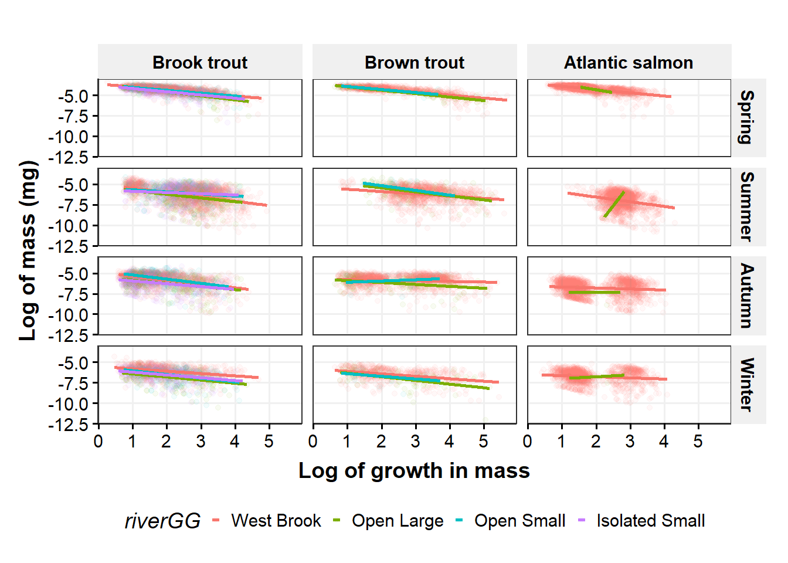

11 Growth in mass
Distribution of growth, negative growth
Causes of neg growth
- Extrinsic
- river, season, flow, temp
- intrinsic
- Sex (fall), life history, section, size, age, previous growth (CF?), movement (section/river)
consequences of neg growth - survival
- future growth (length and mass)
- movement (section/river)
- reprod success?
- local density (con and hetero)
Probs with growth in mass
spawning loss mass in the fall, esp in OB
Interaction between flow:temp, diff btw WB (groundwater dominated at low flow so cold) and tribs (combo of surface and gw?)
Compare growth with t/f cycle diagrams for each river
compare condition factor among species - looks like bkt growing faster in weight
flow/temp circles with gr on top
11.1 Get data
11.1.1 Get electrofishing data
Code
cd <- tar_read(cdWB_electro_target) # raw data
cd1 <- tar_read(cd1_target)
propNegSRS <- tar_read(propNegSRS_target)
propNegSRsN <- tar_read(propNegSRsN_target)
indCountsBySpp <- tar_read(indCountsBySpp_target)
indCounts <- tar_read(indCounts_target)
propNegLabels <- tar_read(propNegLabels_target)11.1.2 Get environmental data
Code
dummy=0 # change to force cache update??
envIn <- tar_read(envIn_target)
envIn_propNeg <- tar_read(envIn_propNeg_target)11.2 Examine raw data
11.2.1 Limit data to consecutive sample captures (cd1)
Previous growth models with length used all possible observations for a fish and interpolated missing observations. Here, we are just looking at consecutive captures to estimate growth over just that interval.
Code
# table(as.numeric(cd$sampleNumber), as.numeric(cd$lagSampleNumber), cd$season, cd$year) |>
# data.frame() |>
# filter(Freq > 0) |>
# arrange(Var1, Var2) |>
# rename(firstCapt = Var1, secondCapt = Var2, season = Var3, year = Var4) |>
# filter(year == 2010)
##### in targets
# cd1 <- cd |>
# filter(sampleNumberDiff == 1,
# tag %notin% c('1bf20ff490', '1bf20ebe4e')) |>
# mutate(negGrowth = grWeight < 0,
# month = month(date),
# dummy = 1) # change to force cache update11.2.2 Find outlier growth rates
11.2.2.1 Negative outlier growth
1bf20ebe4e and 1bf20ff490 have incorrect weights leading to very negative growth rates.
Exclude these tags above. The rest of the quite negative growth fish seem plausible (remember we can’t account for stomach contents or egg loss).
Code
cd |>
arrange(grWeightS) |>
dplyr::select(tag, species, season, sampleNumber, lagSampleNumber, observedWeight, lagObservedWeight, grWeightS)# A tibble: 24,304 × 8
tag species season sampleNumber lagSampleNu…¹ obser…² lagOb…³ grWeig…⁴
<chr> <chr> <dbl> <dbl> <dbl> <dbl> <dbl> <dbl>
1 1bf20ebe4e bnt 3 55 56 46.5 4.3 -0.0320
2 257c67e414 bkt 3 59 60 7.3 4.4 -0.00414
3 1bf0fec291 bkt 3 27 28 2.7 1.6 -0.00409
4 1bf20ff490 bnt 2 54 55 167. 41.8 -0.00378
5 257c67b532 bnt 3 63 64 34 25.5 -0.00371
6 00088d1ad4 bnt 3 63 64 4.5 3.6 -0.00330
7 257c67db60 bnt 3 63 64 24.2 19.5 -0.00317
8 00088d0b59 bnt 3 63 64 3.7 3 -0.00314
9 414b684955 ats 3 15 16 5.7 4.3 -0.00289
10 0009f6ec56 bkt 3 75 76 3.5 2.7 -0.00288
# … with 24,294 more rows, and abbreviated variable names ¹lagSampleNumber,
# ²observedWeight, ³lagObservedWeight, ⁴grWeightS11.2.2.2 Positive outlier growth
Lots of very fast growth mostly in the spring. No clear way to exclude fish.
Code
cd1 |>
arrange(desc(grWeightS)) |>
dplyr::select(tag, species, season, sampleNumber, lagSampleNumber, observedWeight, lagObservedWeight, grWeightS) |>
print(n = 20)# A tibble: 24,299 × 8
tag species season sampleNumber lagSampleNum…¹ obser…² lagOb…³ grWei…⁴
<chr> <chr> <dbl> <dbl> <dbl> <dbl> <dbl> <dbl>
1 1bf1020623 bkt 1 29 30 1.3 14.4 0.0199
2 0009f6eef4 bkt 1 77 78 2.3 10.3 0.0160
3 413f4b1845 ats 1 13 14 1.8 8.3 0.0152
4 1bf16366cf bnt 1 33 34 2 10.7 0.0142
5 410a015165 ats 1 13 14 2.1 9.3 0.0142
6 00088d2d2c bkt 1 73 74 1.8 9.2 0.0141
7 410a0f0653 ats 1 13 14 2.2 10.9 0.0138
8 1bf18b7637 bkt 1 33 34 2.5 13.2 0.0137
9 1bf20e4e30 bnt 1 53 54 2.3 12.1 0.0137
10 1bf1930917 ats 1 37 38 1.9 11.7 0.0136
11 411a356c36 ats 1 17 18 2 7.8 0.0136
12 413d675356 ats 1 13 14 2.2 10.3 0.0134
13 41096c506c ats 1 13 14 2.5 10.4 0.0133
14 1bf18b7083 bkt 1 33 34 2.3 10.7 0.0133
15 41097c2230 ats 1 13 14 2.4 11.6 0.0132
16 1bf18b6cc8 ats 1 33 34 2.7 17 0.0132
17 410a043a56 ats 1 13 14 2.6 13.2 0.0130
18 4109740f1b ats 1 13 14 2.4 11.3 0.0130
19 1bf17f0114 bkt 1 33 34 2.3 10.5 0.0130
20 1bf18b8453 bkt 1 33 34 2.3 10.1 0.0129
# … with 24,279 more rows, and abbreviated variable names ¹lagSampleNumber,
# ²observedWeight, ³lagObservedWeight, ⁴grWeightS11.2.3 Raw length, weight data graphs
11.2.3.1 Distribution of growth rates
Code
ggplot(cd1, aes(grWeight, color = speciesGG)) +
geom_freqpoly(bins = 50) +
labs(x = "Growth in mass (/d)", y = "Frequency") +
scale_color_discrete() +
facet_wrap(~season)
11.2.4 Length vs weight by species
Very few outliers
Code
plotLenW <- function(d, s){
ggplot(d |> filter(species == s), aes(observedLength, observedWeight)) +
geom_point(alpha = 0.5, size = 1) +
scale_x_log10() +
scale_y_log10() +
ggtitle(s) +
labs(x = "Length (mm)", y = "Mass (mg)") +
scale_color_discrete() +
facet_grid(riverGG~year, scales = 'free')
}
plotLenW(cd1, "bkt")
Code
plotLenW(cd1, "bnt")
Code
plotLenW(cd1, "ats")
11.2.5 Weight vs weight at next sample
Code
plotWW <- function(d, s){
ggplot(d |> filter(species == s), aes(observedWeight, lagObservedWeight, color = seasonGG)) +
geom_point(alpha = 0.15) +
guides(color = guide_legend(override.aes = list(alpha = 1))) +
ggtitle(s) +
labs(y = "mass (mg)", y = "Mass (mg) at next sample") +
scale_color_discrete() +
facet_wrap(~riverGG, scales = 'free')
}
plotWW(cd1, "bkt")
Code
plotWW(cd1, "bnt")
Code
plotWW(cd1, "ats")
11.3 Two growth models
11.3.1 Size-adjusted growth model
11.3.1.1 Get l-w relationships for size-adjusted growth model
Here, we will explore size-independent growth in mass, see Sigourney, D. B., B H Letcher, M. Obedzinski, and R. A. Cunjak. “Size-Independent Growth in Fishes: Patterns, Models and Metrics.” Journal of Fish Biology 72, no. 10 (2008): 2435–55. https://doi.org/10.1111/j.1095-8649.2008.01830.x. Size-independent growth (grWeightS) is calculated in getDataElectro_targets.R file using addSizeIndGrowthWeight().
grWeightS uses the slope of log(observedWeight) ~ log(grWeight) for each river and season and species to adjust growth.
A simple linear models shows we need to get separate slopes for each river and season and species.
Code
ggplot(cd1 |> filter(grWeight > 0),
aes(log(observedWeight), log(grWeight), color = riverGG)) +
geom_point(alpha = 0.05) +
geom_smooth(method = "lm", se = FALSE) +
labs(y = "Log of mass (mg)", x = "Log of growth in mass") +
scale_color_discrete() +
facet_grid(seasonGG~speciesGG)
Code
mod0 <- lm(log(grWeight) ~ log(observedWeight), data = cd1 |> filter(grWeight > 0))
mod1 <- lm(log(grWeight) ~ log(observedWeight) * river, data = cd1 |> filter(grWeight > 0))
mod2 <- lm(log(grWeight) ~ log(observedWeight) * river * factor(season), data = cd1 |> filter(grWeight > 0))
mod3 <- lm(log(grWeight) ~ log(observedWeight) * factor(season), data = cd1 |> filter(grWeight > 0))
mod4 <- lm(log(grWeight) ~ log(observedWeight) * river * factor(season) * species, data = cd1 |> filter(grWeight > 0))
AIC(mod0,mod1,mod2,mod3,mod4) |> arrange(AIC) df AIC
mod4 73 43939.97
mod2 33 47554.54
mod3 9 48050.71
mod1 9 64666.62
mod0 3 64751.3911.3.2 Compare size-adjusted and instantaneous growth
Differences don’t seem big enough to warrant the extra complexity from the s-adjusted growth metric
Code
ggplot(cd1, aes(grWeight, grWeightS, color = riverGG)) +
geom_point(alpha = 0.05) +
geom_smooth(method = "lm", se = FALSE) +
geom_abline(intercept = 0, slope = 1) +
labs(y = "Gowth in mass", x = "Size-adjusted growth in mass") +
scale_color_discrete() +
facet_grid(seasonGG~speciesGG)
Code
ggplot(cd1 |>
dplyr::select(observedWeight, grWeight, grWeightS, seasonGG, speciesGG) |>
pivot_longer(cols = c(grWeight, grWeightS)),
aes(log(observedWeight), value, color = name)) +
geom_point(alpha = 0.05 ) +
geom_smooth(method = "lm", se = FALSE) +
labs(y = "Log of mass (mg)", x = "Growth in mass") +
scale_color_discrete() +
facet_grid(seasonGG~speciesGG)
11.4 Compare growth in length and mass
11.4.1 Growth rate in length vs size-independent growth rate in mass
Code
ggplot(cd1, aes(grLength, grWeightS)) +
geom_point(aes(size = observedWeight), alpha = 0.02) +
guides(size = guide_legend(override.aes = list(alpha = 1))) +
labs(x = "Growth in length", y = "Size-adjusted growth in mass") +
scale_color_discrete() +
facet_grid(seasonGG~speciesGG)
11.4.2 Growth rate in length vs ‘instantaneous’ growth rate in mass
Code
ggplot(cd1, aes(grLength, grWeight)) +
geom_point(aes(size = observedWeight), alpha = 0.02) +
guides(size = guide_legend(override.aes = list(alpha = 1))) +
labs(x = "Growth in length", y = "Growth in mass") +
scale_color_discrete() +
facet_grid(seasonGG~speciesGG)
Code
ggplot(cd1 |> filter(species=="bnt", season ==2), aes(grLength, grWeight, color = factor(year))) +
geom_point( alpha = 1) +
geom_smooth(method="lm", se=FALSE) +
guides(size = guide_legend(override.aes = list(alpha = 1))) +
labs(x = "Growth in length", y = "Growth in mass") +
scale_color_discrete() 
Code
# facet_wrap(~year)11.5 Flow and temperature growth models
11.5.1 Mean flow effect on growth?
Maybe in Jimmy for bnt, or for ats
Code
plotFlowGR <- function(d, r){
ggplot(d |> filter(river == r), aes(meanFlowByRiver, grWeight, color = speciesGG)) +
geom_point(alpha = 0.05) +
geom_smooth(method = "lm", se = FALSE) +
geom_smooth(se = FALSE) +
geom_smooth(method = "lm", se =FALSE, formula = y~poly(x,2)) +
labs(x = "Mean flow", y = "Growth in mass") +
scale_color_discrete() +
ggtitle(r) +
facet_grid(seasonGG~speciesGG)#, scales = 'free')
}
plotFlowGR(cd1, "west brook")
Code
plotFlowGR(cd1, "wb jimmy")
Code
plotFlowGR(cd1, "wb mitchell")
Code
plotFlowGR(cd1, "wb obear")
11.5.2 Mean temperature effect on growth?
Maybe in Jimmy for bnt, or for ats
Code
plotTempGR <- function(d, s){
ggplot(d |> filter(seasonGG == s), aes(meanTemperature, grWeight, color = speciesGG)) +
geom_point(alpha = 0.5) +
geom_smooth(method = "lm", se = FALSE) +
geom_smooth(se = FALSE) +
geom_smooth(method = "lm", se =FALSE, formula = y~poly(x,2)) +
labs(x = "Mean temperature (c)", y = "Growth in mass") +
scale_color_discrete() +
ggtitle(s) +
facet_grid(speciesGG~riverGG)#, scales = 'free')
}
plotTempGR(cd1, "Spring")
Code
plotTempGR(cd1, "Summer")
Code
plotTempGR(cd1, "Autumn")
Code
plotTempGR(cd1, "Winter")
11.6 Negative vs positive growth
11.6.1 Proportion of fish with negative growth by species/river/season
Code
ggplot(cd1 |> filter(!is.na(negGrowth)), aes(negGrowth)) +
geom_bar() +
facet_grid(seasonGG~speciesGG+riverGG, scales = "free")
Code
ggplot(propNegSRS |> filter(n > 50), aes(seasonGG, propNeg, color = riverGG, group = riverGG)) +
geom_point(aes(size = n)) +
geom_line() +
labs(x = "Season", y = "Proportion of fish with negative growth in mass") +
scale_color_discrete() +
facet_wrap(~speciesGG)
11.6.2 Proportion of fish with negative growth by species/river/sampleNumber
Break down season by year
Code
ggplot(propNegSRsN |> filter(n > 10), aes(year, propNeg, color = riverGG)) +
geom_point(aes(size = n)) +
geom_line() +
labs(x = "Year", y = "Proportion of fish with negative growth in mass") +
scale_color_discrete() +
facet_grid(seasonGG~speciesGG)
11.7 Environmental effects on proportion of fish with negative growth
11.7.1 Proportion of fish with negative growth by flow
Code
ggplot(propNegSRsN |> filter(n > 10, riverGG == "West Brook"), aes(mF, propNeg, color = riverGG)) +
geom_point(aes(size = n)) +
geom_smooth(method = "lm", se = FALSE) +
scale_y_continuous("Proportion of fish with negative growth in mass") +
scale_x_log10("Mean flow") +
scale_color_discrete() +
ggtitle("West Brook") +
facet_grid(seasonGG~speciesGG)
Code
ggplot(propNegSRsN |> filter(n > 10, riverGG != "West Brook"), aes(mF, propNeg, color = riverGG)) +
geom_point(aes(size = n)) +
geom_smooth(method = "lm", se = FALSE) +
scale_y_continuous("Proportion of fish with negative growth in mass") +
scale_x_log10("Mean flow") +
scale_color_discrete() +
ggtitle("Tributaries") +
facet_grid(seasonGG~speciesGG)
11.7.2 Proportion of fish with negative growth by temperature
Code
plotNegGrowth_temp <- function(d, s){
ggplot(d |> filter(n > 10, seasonGG == s), aes(mT, propNeg, color = riverGG)) +
geom_point(aes(size = n)) +
geom_smooth(method = "lm", se = FALSE) +
scale_y_continuous("Proportion of fish with negative growth in mass") +
scale_x_continuous("Mean temperature (C)") +
scale_color_discrete() +
ggtitle(s) +
facet_grid(riverGG~speciesGG)
}
plotNegGrowth_temp(propNegSRsN, "Spring")
Code
plotNegGrowth_temp(propNegSRsN, "Summer")
Code
plotNegGrowth_temp(propNegSRsN, "Autumn")
Code
plotNegGrowth_temp(propNegSRsN, "Winter")
11.7.3 F/T cycle graphs
11.7.3.1 Mean flow and temperature
Code
plot_mT_mF <- function(s, plotText){
ggplot(propNegSRsN |> filter(n > 25, speciesGG == s), aes(mT, mF_log10, color = factor(seasonGG))) +
geom_point(aes(size = propNeg)) +
{if(plotText) geom_text(aes(label = year), vjust = 0, nudge_y = -0.075, check_overlap = FALSE, size = 3)} +
ggtitle(s) +
labs(x = "Mean temperature (C)", y = "log10 of mean Flow") +
scale_color_discrete() +
facet_wrap(~riverGG, scales = "free")
}
plot_mT_mF("Brook trout", FALSE)
Code
plot_mT_mF("Brown trout", FALSE)
Code
plot_mT_mF("Atlantic salmon", FALSE)
11.7.3.2 Mean flow and temperature with year labels
Code
plot_mT_mF("Brook trout", TRUE)
Code
plot_mT_mF("Brown trout", TRUE)
Code
plot_mT_mF("Atlantic salmon", TRUE)
Mean flow and temperature values for each season and year for the West Brook
Not very informative
Code
ggplot(propNegSRsN |> filter(n > 10, riverGG == 'West Brook') |> arrange(riverGG, speciesGG, year, seasonGG), aes(mT, mF_log10)) +
geom_line() +
geom_point(aes(color = factor(seasonGG))) +
facet_wrap(~year)
Yearly temperature/flow cycles of daily data
Code
plotMerged <- function(d, r, minYear = 2000, maxYear = 2017){
ggplot(d |> filter(riverGG == r, year %in% c(minYear:maxYear)),
aes(temperature, log10(flowByRiverm3s), color = seasonGG, group = seasonGG)) +
geom_point() +
geom_smooth(se = FALSE) +
#geom_line() +
labs(x = "Temperature (C)", y = "log10 of Flow") +
scale_color_discrete() +
ggtitle(r) +
facet_wrap(~year, scales = 'free')
}
# this plots f/t for all three species - good for filling in gaps
plotMerged(envIn_propNeg, "West Brook", 2000, 2017)
Code
plotMerged(envIn_propNeg, "Open Large", 2002, 2017)
Code
plotMerged(envIn_propNeg, "Open Small", 2002, 2017)
Code
plotMerged(envIn_propNeg, "Isolated Small", 2002, 2017)
Smooths of temperature/flow cycles of daily data by season
Code
plotMergedBySeason <- function(d, r, minYear = 2000, maxYear = 2017) {
ggplot(d |> filter(riverGG == r, year %in% c(minYear:maxYear), !is.na(seasonGG)),
aes(temperature, log10(flowByRiverm3s),
color = factor(year), group = year
)
) +
#geom_point() +
geom_smooth(se = FALSE) +
labs(x = "Temperature (C)", y = "log10 of Flow") +
scale_color_discrete() +
ggtitle(r) +
facet_wrap(~seasonGG, scales = 'free')
}
plotMergedBySeason(envIn_propNeg, "West Brook", 2000, 2017)
Code
plotMergedBySeason(envIn_propNeg, "Open Large", 2002, 2017)
Code
plotMergedBySeason(envIn_propNeg, "Open Small", 2002, 2017)
Code
plotMergedBySeason(envIn_propNeg, "Isolated Small", 2002, 2017)
11.7.3.3 F/T cycles with labels
Plot F/T cycles by river, season, species with label for propNeg and conspecific and all-species abundances
Code
plotMergedBySeasonByEverything <- function(d, d2, r, s, spp, minYear = 2000, maxYear = 2017){
ggplot(d |>
filter(riverGG == r,
year %in% c(minYear:maxYear),
!is.na(seasonGG),
seasonGG == s,
speciesGG == spp),
aes(temperature, log10(flowByRiverm3s))
) +
geom_smooth(se = FALSE, color = "darkgrey") +
geom_point(aes(color = yday)) +
geom_text(aes(
x = minTemp + 3.0,
y = log10(minFlow) - 1,
label = paste("propNeg=",round(propNeg, 2))
#size = propNeg
),
data = d2|>
filter(riverGG == r,
year %in% c(minYear:maxYear),
seasonGG == s,
speciesGG == spp)
) +
geom_text(aes(
x = minTemp + 3.0,
y = log10(minFlow) - 0.3,
label = paste(paste("nIndAllSpp=", nInd), paste("nIndBySpp=", nIndBySpp), sep = "\n")
),
data = d2|>
filter(riverGG == r,
year %in% c(minYear:maxYear),
seasonGG == s,
speciesGG == spp)
) +
labs(x = "Temperature (c)", y = "log10 Flow") +
ggtitle(paste(r, s, spp, sep = ", ")) +
facet_wrap(~year)
}
plotMergedBySeasonByEverything(envIn_propNeg, propNegLabels, "West Brook", "Spring", "Brook trout", 2000, 2017)
Code
plotMergedBySeasonByEverything(envIn_propNeg, propNegLabels, "West Brook", "Summer", "Brook trout", 2000, 2017)
Code
plotMergedBySeasonByEverything(envIn_propNeg, propNegLabels, "West Brook", "Autumn", "Brook trout", 2000, 2017)
Code
plotMergedBySeasonByEverything(envIn_propNeg, propNegLabels, "West Brook", "Winter", "Brook trout", 2000, 2017)
Code
plotMergedBySeasonByEverything(envIn_propNeg, propNegLabels, "West Brook", "Spring", "Brown trout", 2002, 2017)
Code
plotMergedBySeasonByEverything(envIn_propNeg, propNegLabels, "West Brook", "Summer", "Brown trout", 2002, 2017)
Code
plotMergedBySeasonByEverything(envIn_propNeg, propNegLabels, "West Brook", "Autumn", "Brown trout", 2002, 2017)
Code
plotMergedBySeasonByEverything(envIn_propNeg, propNegLabels, "West Brook", "Winter", "Brown trout", 2002, 2017)
Code
plotMergedBySeasonByEverything(envIn_propNeg, propNegLabels, "West Brook", "Spring", "Atlantic salmon", 2002, 2017)
Code
plotMergedBySeasonByEverything(envIn_propNeg, propNegLabels, "West Brook", "Summer", "Atlantic salmon", 2002, 2017)
Code
plotMergedBySeasonByEverything(envIn_propNeg, propNegLabels, "West Brook", "Autumn", "Atlantic salmon", 2002, 2017)
Code
plotMergedBySeasonByEverything(envIn_propNeg, propNegLabels, "West Brook", "Winter", "Atlantic salmon", 2002, 2017)
Code
# Open large
plotMergedBySeasonByEverything(envIn_propNeg, propNegLabels, "Open Large", "Spring", "Brook trout", 2000, 2017)
Code
plotMergedBySeasonByEverything(envIn_propNeg, propNegLabels, "Open Large", "Summer", "Brook trout", 2000, 2017)
Code
plotMergedBySeasonByEverything(envIn_propNeg, propNegLabels, "Open Large", "Autumn", "Brook trout", 2000, 2017)
Code
plotMergedBySeasonByEverything(envIn_propNeg, propNegLabels, "Open Large", "Winter", "Brook trout", 2000, 2017)
Code
plotMergedBySeasonByEverything(envIn_propNeg, propNegLabels, "Open Large", "Spring", "Brown trout", 2002, 2017)
Code
plotMergedBySeasonByEverything(envIn_propNeg, propNegLabels, "Open Large", "Summer", "Brown trout", 2002, 2017)
Code
plotMergedBySeasonByEverything(envIn_propNeg, propNegLabels, "Open Large", "Autumn", "Brown trout", 2002, 2017)
Code
plotMergedBySeasonByEverything(envIn_propNeg, propNegLabels, "Open Large", "Winter", "Brown trout", 2002, 2017)
Code
# Open small
plotMergedBySeasonByEverything(envIn_propNeg, propNegLabels, "Open Small", "Spring", "Brook trout", 2000, 2017)
Code
plotMergedBySeasonByEverything(envIn_propNeg, propNegLabels, "Open Small", "Summer", "Brook trout", 2000, 2017)
Code
plotMergedBySeasonByEverything(envIn_propNeg, propNegLabels, "Open Small", "Autumn", "Brook trout", 2000, 2017)
Code
plotMergedBySeasonByEverything(envIn_propNeg, propNegLabels, "Open Small", "Winter", "Brook trout", 2000, 2017)
Code
plotMergedBySeasonByEverything(envIn_propNeg, propNegLabels, "Open Small", "Spring", "Brown trout", 2002, 2017)
Code
plotMergedBySeasonByEverything(envIn_propNeg, propNegLabels, "Open Small", "Summer", "Brown trout", 2002, 2017)
Code
plotMergedBySeasonByEverything(envIn_propNeg, propNegLabels, "Open Small", "Autumn", "Brown trout", 2002, 2017)
Code
plotMergedBySeasonByEverything(envIn_propNeg, propNegLabels, "Open Small", "Winter", "Brown trout", 2002, 2017)
Code
# Isolated small
plotMergedBySeasonByEverything(envIn_propNeg, propNegLabels, "Isolated Small", "Spring", "Brook trout", 2000, 2017)
Code
plotMergedBySeasonByEverything(envIn_propNeg, propNegLabels, "Isolated Small", "Summer", "Brook trout", 2000, 2017)
Code
plotMergedBySeasonByEverything(envIn_propNeg, propNegLabels, "Isolated Small", "Autumn", "Brook trout", 2000, 2017)
Code
plotMergedBySeasonByEverything(envIn_propNeg, propNegLabels, "Isolated Small", "Winter", "Brook trout", 2000, 2017)
Code
plotMergedBySeasonByEverything(envIn_propNeg, propNegLabels, "West Brook", "Spring", "Brook trout", 2000, 2017)
Code
plotMergedBySeasonByEverything(envIn_propNeg, propNegLabels, "West Brook", "Spring", "Brown trout", 2000, 2017)
Code
plotMergedBySeasonByEverything(envIn_propNeg, propNegLabels, "West Brook", "Spring", "Atlantic salmon", 2000, 2017)
Code
plotMergedBySeasonByEverything(envIn_propNeg, propNegLabels, "West Brook", "Summer", "Brook trout", 2000, 2017)
Code
plotMergedBySeasonByEverything(envIn_propNeg, propNegLabels, "West Brook", "Summer", "Brown trout", 2000, 2017)
Code
plotMergedBySeasonByEverything(envIn_propNeg, propNegLabels, "West Brook", "Summer", "Atlantic salmon", 2000, 2017)
Code
ggplot(propNegSRsN |> filter(n > 10, riverGG=="West Brook", speciesGG == "Brook trout"),
aes(year, propNeg, color = factor(seasonGG))) +
geom_point(aes(size = n)) +
geom_line() +
ggtitle("West brook") +
labs(x = "Year", y = "Proportion of fish with negative growth in mass") +
scale_color_discrete() 
Code
#facet_wrap(~season)11.8 Logistic models for environmental effects on propNeg
11.8.1 Standardize flow and temperature
Code
# getZ <- function(d){
# list(
# mean = mean(d, na.rm = TRUE),
# sd = sd(d, na.rm = TRUE)
# )
# }
# fZ <- getZ(cd1$meanFlowByRiver)
# fT <- getZ(cd1$meanTemperature)
z <- cd1 |>
group_by(season) |>
summarize(fZMean = mean(meanFlowByRiver, na.rm = TRUE),
fZSd = sd(meanFlowByRiver, na.rm = TRUE),
fTMean = mean(meanTemperature, na.rm = TRUE),
fTSd = sd(meanTemperature, na.rm = TRUE)
)
cd1 <- cd1 |>
left_join(z) |>
mutate(meanFlowByRiverZ = (meanFlowByRiver - fZMean)/fZSd,
meanTempZ = (meanTemperature - fTMean)/fTSd)11.8.2 Raw data with logistic fit for flow effect
Code
ggplot(cd1 |> filter(!is.na(negGrowth)), aes(meanFlowByRiverZ, negGrowth * 1, color = river)) +
geom_point(alpha = 0.1) +
geom_smooth(method = "glm",
method.args = list(family = "binomial"),
se = FALSE) +
labs(y = "Probability of negative growth in mass", x = "Mean flow") +
facet_grid(season~species)
Code
ggplot(cd1 |> filter(!is.na(negGrowth)), aes(meanFlowByRiverZ, negGrowth * 1, color = river)) +
geom_point(alpha = 0.1) +
geom_smooth(method = "glm",
method.args = list(family = "binomial"),
se = FALSE) +
labs(y = "Probability of negative growth in mass", x = "Mean flow") +
facet_grid(season~species+river)
11.8.3 Raw data with logistic fit for temperature effect
Code
ggplot(cd1 |> filter(!is.na(negGrowth), meanTempZ > -4), aes(meanTempZ, negGrowth * 1, color = river)) +
geom_point(alpha = 0.1) +
geom_smooth(method = "glm",
method.args = list(family = "binomial"),
se = FALSE) +
labs(y = "Probability of negative growth in mass", x = "Mean temperature") +
facet_grid(season~species)
11.9 Logistic model for flow and temperature, one species at a time
Species occupy different rivers, so an all-species model will have unequal river representation across species and don’t need to predict where species are not.
Need to think through whether these models make sense…
Code
runSppModels <- function(d, speciesIn) {
models =
tibble(model =
c(
'negGrowth ~ meanFlowByRiverZ * meanTempZ * river',
'negGrowth ~ meanFlowByRiverZ * meanTempZ + river',
'negGrowth ~ meanFlowByRiverZ + meanTempZ + river',
'negGrowth ~ meanFlowByRiverZ * meanTempZ' ,
'negGrowth ~ meanFlowByRiverZ * meanTempZ * river * factor(season)',
'negGrowth ~ meanFlowByRiverZ + meanTempZ * river * factor(season)',
'negGrowth ~ meanFlowByRiverZ * meanTempZ * river * factor(season) * observedWeight'
)
) |>
mutate(
fit = map(model, ~glm(.x, family = "binomial", data = d |> filter(species == speciesIn))),
glanced = map(fit, broom::glance),
tidied = map(fit, broom::tidy)
)
return(models)
}11.9.1 Predict p(neg growth in mass)
Code
predictSpp <- function(dIn, modIn, speciesIn){
d <- dIn |> filter(species == speciesIn)
byAIC = modIn |>
unnest(glanced) |>
arrange(AIC) |>
dplyr::select(model, AIC, df.residual, fit, tidied)
predDSpp <- expand.grid(
meanFlowByRiverZ = seq(-1.5,1.5,0.25),
meanTempZ = seq(-1.5,1.5,0.25),
river = unique(d$river),
season = unique(d$season),
observedWeight = seq(min(d$observedWeight, na.rm = TRUE), max(d$observedWeight, na.rm = TRUE), 40)
)
pred <- add_column(predDSpp,
pred = predict.glm(byAIC[1,]$fit[[1]], predDSpp, type = "response")) |>
mutate(groupT = paste(river, season, meanTempZ, sep = "_"),
groupF = paste(river, season, meanFlowByRiverZ, sep = "_"))
return(
list(
pred = pred,
byAIC = byAIC
)
)
} 11.9.2 Brook trout
Code
speciesIn <- "bkt"
modBKT <- runSppModels(cd1, speciesIn)
predBKT <- predictSpp(cd1, modBKT, speciesIn)
ggplot(predBKT$pred |> filter(meanTempZ %in% c(-1.5,0,1.5), meanFlowByRiverZ %in% c(-1.5,0,1.5)), aes(observedWeight, pred, group = groupF)) +
geom_line(aes(color = factor(meanFlowByRiverZ))) +
labs(y = "Probability of negative growth in mass", x = "Body mass (mg)") +
facet_grid(season~river+meanTempZ)
11.9.3 Brown trout
Code
speciesIn <- "bnt"
modBNT <- runSppModels(cd1, speciesIn)
predBNT <- predictSpp(cd1, modBNT, speciesIn)
ggplot(predBNT$pred |> filter(meanTempZ %in% c(-1.5,0,1.5), meanFlowByRiverZ %in% c(-1.5,0,1.5)), aes(observedWeight, pred, group = groupF)) +
geom_line(aes(color = factor(meanFlowByRiverZ))) +
labs(y = "Probability of negative growth in mass", x = "Body mass (mg)") +
facet_grid(season~river+meanTempZ)
11.9.4 Atlantic salmon
Code
speciesIn <- "ats"
modATS <- runSppModels(cd1, speciesIn)
predATS <- predictSpp(cd1, modATS, speciesIn)
ggplot(predATS$pred |> filter(meanTempZ %in% c(-1.5,0,1.5), meanFlowByRiverZ %in% c(-1.5,0,1.5)), aes(observedWeight, pred, group = groupF)) +
geom_line(aes(color = factor(meanFlowByRiverZ))) +
labs(y = "Probability of negative growth in mass", x = "Body mass (mg)") +
facet_grid(season~river+meanTempZ)
11.9.5 Pairs plots
11.10 Deprecated logistic models below
11.11 Logistic model for flow and temperature, all species
11.11.1 Model selection
Code
modSpecies <- c("bkt", "ats", "bnt")
cd1Mod <- cd1 |> filter(species == modSpecies)
modFT0 <- glm(negGrowth ~ meanFlowByRiverZ * meanTempZ * river * species, family = "binomial", data = cd1Mod)
modFT1 <- glm(negGrowth ~ meanFlowByRiverZ * meanTempZ * river + species, family = "binomial", data = cd1Mod)
modFT2 <- glm(negGrowth ~ meanFlowByRiverZ * meanTempZ + river + species, family = "binomial", data = cd1Mod)
modFT3 <- glm(negGrowth ~ meanFlowByRiverZ + meanTempZ + river + species, family = "binomial", data = cd1Mod)
modFT4 <- glm(negGrowth ~ meanFlowByRiverZ * meanTempZ + river , family = "binomial", data = cd1Mod)
modFT5 <- glm(negGrowth ~ meanFlowByRiverZ * meanTempZ + river , family = "binomial", data = cd1Mod)
modFT6 <- glm(negGrowth ~ meanFlowByRiverZ * meanTempZ + species , family = "binomial", data = cd1Mod)
modFT7 <- glm(negGrowth ~ meanFlowByRiverZ * meanTempZ, family = "binomial", data = cd1Mod)
modFT8 <- glm(negGrowth ~ meanFlowByRiverZ * meanTempZ * river * factor(season) + species, family = "binomial", data = cd1Mod)
modFT9 <- glm(negGrowth ~ meanFlowByRiverZ * meanTempZ * river * factor(season) * species, family = "binomial", data = cd1Mod)
modFT10 <- glm(negGrowth ~ meanFlowByRiverZ + meanTempZ * river * factor(season) * species, family = "binomial", data = cd1Mod)
modFT11 <- glm(negGrowth ~ meanFlowByRiverZ * meanTempZ * river * factor(season) * observedWeight + species, family = "binomial", data = cd1Mod)
modFT12 <- glm(negGrowth ~ meanFlowByRiverZ * meanTempZ * river * factor(season) * species * observedWeight, family = "binomial", data = cd1Mod)
AIC(modFT0, modFT1,modFT2, modFT3,modFT4,modFT5, modFT6,modFT7,modFT8,modFT9,modFT10, modFT11, modFT12) |> arrange(AIC) df AIC
modFT11 130 4781.318
modFT8 66 5176.029
modFT1 18 6294.744
modFT0 36 6312.866
modFT2 9 6353.926
modFT3 8 6377.385
modFT6 6 6432.862
modFT4 7 6564.863
modFT5 7 6564.863
modFT7 4 6726.100
modFT9 137 96366.380
modFT12 261 107571.651
modFT10 71 122906.68311.11.2 Model results for additive model (not very good)
Code
# https://www.statology.org/logistic-regression-in-r/
#summary(modFT3)
#anova(modFT3)
pscl::pR2(modFT3)["McFadden"]fitting null model for pseudo-r2 McFadden
0.06199948 Code
caret::varImp(modFT3) |> arrange(desc(Overall)) Overall
speciesbnt 12.320525
meanFlowByRiverZ 11.658760
riverwest brook 4.533210
speciesbkt 4.525811
riverwb mitchell 3.541149
riverwb obear 2.704749
meanTempZ 1.01266911.11.3 Model results for full interactive model (best model)
Code
# https://www.statology.org/logistic-regression-in-r/
#summary(modFT11)
#anova(modFT11)
# full interaction
pscl::pR2(modFT11)["McFadden"]fitting null model for pseudo-r2 McFadden
0.3333216 Code
caret::varImp(modFT11) |> arrange(desc(Overall)) Overall
speciesbnt 1.673957e+01
speciesbkt 8.650975e+00
meanFlowByRiverZ:riverwest brook:factor(season)2 4.750209e-04
meanFlowByRiverZ:riverwest brook 4.706313e-04
meanFlowByRiverZ:riverwest brook:factor(season)3 4.676677e-04
meanFlowByRiverZ:meanTempZ:riverwest brook:factor(season)3 4.516393e-04
meanFlowByRiverZ:riverwest brook:factor(season)4 4.509459e-04
meanFlowByRiverZ:meanTempZ:riverwest brook 4.439340e-04
meanFlowByRiverZ:meanTempZ:riverwest brook:factor(season)2 4.273879e-04
meanFlowByRiverZ:meanTempZ:riverwest brook:factor(season)4 4.142384e-04
riverwest brook:factor(season)2 3.861528e-04
riverwest brook 3.811834e-04
riverwest brook:factor(season)3 3.801010e-04
riverwest brook:factor(season)4 3.622467e-04
meanFlowByRiverZ:riverwest brook:factor(season)4:observedWeight 3.275304e-04
meanFlowByRiverZ:riverwest brook:factor(season)2:observedWeight 3.083556e-04
meanFlowByRiverZ:riverwest brook:observedWeight 2.981952e-04
meanFlowByRiverZ:riverwest brook:factor(season)3:observedWeight 2.975035e-04
riverwest brook:factor(season)4:observedWeight 2.585127e-04
meanFlowByRiverZ:meanTempZ:riverwest brook:factor(season)2:observedWeight 2.542765e-04
meanFlowByRiverZ:meanTempZ:riverwest brook:factor(season)3:observedWeight 2.449268e-04
meanFlowByRiverZ:meanTempZ:riverwest brook:observedWeight 2.444246e-04
riverwest brook:factor(season)2:observedWeight 2.424675e-04
meanFlowByRiverZ:meanTempZ:riverwest brook:factor(season)4:observedWeight 2.414528e-04
riverwest brook:observedWeight 2.348804e-04
riverwest brook:factor(season)3:observedWeight 2.334828e-04
meanTempZ:riverwest brook:factor(season)3 1.509604e-04
meanTempZ:riverwest brook 1.485534e-04
meanTempZ:riverwest brook:factor(season)2 1.374863e-04
meanFlowByRiverZ:riverwb obear:factor(season)4:observedWeight 1.347300e-04
meanTempZ:riverwest brook:factor(season)4 1.293147e-04
riverwb obear:factor(season)4:observedWeight 1.127629e-04
meanTempZ:riverwest brook:factor(season)2:observedWeight 1.022263e-04
meanTempZ:riverwest brook:factor(season)3:observedWeight 9.664372e-05
meanTempZ:riverwest brook:observedWeight 9.583989e-05
meanTempZ:riverwest brook:factor(season)4:observedWeight 9.294538e-05
factor(season)4 5.811218e-05
meanFlowByRiverZ:meanTempZ:riverwb mitchell:factor(season)2 4.942564e-05
factor(season)3 4.411080e-05
factor(season)2 3.966873e-05
meanTempZ:riverwb mitchell:factor(season)2 3.846244e-05
meanFlowByRiverZ:meanTempZ:riverwb obear:factor(season)2 3.534602e-05
meanFlowByRiverZ:riverwb obear:factor(season)2 3.069680e-05
meanTempZ:riverwb obear:factor(season)2 2.904493e-05
meanFlowByRiverZ:riverwb mitchell:factor(season)2 2.712741e-05
meanFlowByRiverZ:meanTempZ:riverwb obear:factor(season)2:observedWeight 2.688942e-05
riverwb obear:factor(season)2 2.598764e-05
meanFlowByRiverZ:factor(season)4:observedWeight 2.560344e-05
meanFlowByRiverZ:meanTempZ:riverwb obear:factor(season)4 2.450004e-05
meanTempZ:riverwb obear:factor(season)2:observedWeight 2.185656e-05
riverwb mitchell:factor(season)2 2.025643e-05
meanFlowByRiverZ:factor(season)4 2.016113e-05
meanTempZ:riverwb obear:factor(season)4 1.931245e-05
meanFlowByRiverZ:meanTempZ:riverwb mitchell:factor(season)4 1.842168e-05
meanFlowByRiverZ:meanTempZ:factor(season)4 1.815922e-05
meanFlowByRiverZ:riverwb mitchell:factor(season)2:observedWeight 1.701214e-05
factor(season)4:observedWeight 1.614829e-05
meanTempZ:riverwb mitchell:factor(season)4 1.528836e-05
meanFlowByRiverZ:riverwb obear:factor(season)4 1.308437e-05
meanFlowByRiverZ:meanTempZ:riverwb mitchell:factor(season)2:observedWeight 1.277844e-05
riverwb mitchell:factor(season)2:observedWeight 1.263924e-05
meanFlowByRiverZ:meanTempZ:factor(season)2 1.239016e-05
riverwb obear:factor(season)4 1.193553e-05
meanFlowByRiverZ:riverwb obear:factor(season)2:observedWeight 1.166995e-05
meanFlowByRiverZ:meanTempZ:riverwb mitchell:factor(season)3:observedWeight 1.076012e-05
meanTempZ:factor(season)4 1.030240e-05
meanTempZ:riverwb mitchell:factor(season)3:observedWeight 9.603197e-06
meanFlowByRiverZ:meanTempZ:riverwb mitchell:factor(season)3 9.276399e-06
riverwb obear:factor(season)2:observedWeight 9.214154e-06
meanFlowByRiverZ:meanTempZ:factor(season)3 9.149945e-06
meanFlowByRiverZ:riverwb mitchell:factor(season)4 8.923302e-06
meanTempZ:factor(season)2 8.855183e-06
meanTempZ:riverwb mitchell:factor(season)2:observedWeight 8.781201e-06
meanTempZ:riverwb mitchell:factor(season)3 8.677518e-06
meanFlowByRiverZ:factor(season)2 8.267091e-06
meanFlowByRiverZ:meanTempZ:riverwb obear:factor(season)4:observedWeight 8.179262e-06
meanFlowByRiverZ:riverwb obear:factor(season)3 7.965424e-06
factor(season)3:observedWeight 7.264917e-06
meanFlowByRiverZ:meanTempZ:riverwb mitchell 7.169858e-06
meanTempZ:riverwb mitchell 7.098904e-06
meanTempZ:factor(season)4:observedWeight 7.042696e-06
meanFlowByRiverZ:meanTempZ:riverwb obear:factor(season)3:observedWeight 6.899535e-06
meanTempZ:factor(season)3 6.858889e-06
meanFlowByRiverZ:meanTempZ:factor(season)2:observedWeight 6.840304e-06
meanTempZ:riverwb mitchell:factor(season)4:observedWeight 6.452451e-06
meanTempZ:riverwb mitchell:observedWeight 6.446486e-06
meanFlowByRiverZ:meanTempZ:riverwb mitchell:observedWeight 6.403117e-06
meanFlowByRiverZ:factor(season)3:observedWeight 6.366233e-06
riverwb obear:factor(season)3 6.303099e-06
meanFlowByRiverZ:meanTempZ:riverwb obear:factor(season)3 6.170406e-06
meanFlowByRiverZ:meanTempZ:riverwb mitchell:factor(season)4:observedWeight 6.164839e-06
meanFlowByRiverZ:meanTempZ:factor(season)4:observedWeight 5.536261e-06
meanTempZ:riverwb obear:factor(season)3:observedWeight 5.475057e-06
meanFlowByRiverZ:factor(season)2:observedWeight 5.184155e-06
meanFlowByRiverZ:observedWeight 5.153746e-06
riverwb mitchell:observedWeight 5.029894e-06
meanFlowByRiverZ:riverwb mitchell:observedWeight 4.904199e-06
meanTempZ:riverwb obear:factor(season)3 4.836748e-06
observedWeight 4.742662e-06
riverwb mitchell 4.734585e-06
meanFlowByRiverZ:riverwb mitchell 4.662791e-06
riverwb mitchell:factor(season)4:observedWeight 4.479157e-06
riverwb mitchell:factor(season)4 3.855573e-06
meanFlowByRiverZ:meanTempZ 3.853198e-06
meanTempZ:factor(season)2:observedWeight 3.825444e-06
meanTempZ 3.527527e-06
meanFlowByRiverZ:riverwb mitchell:factor(season)4:observedWeight 3.457951e-06
riverwb mitchell:factor(season)3:observedWeight 3.415030e-06
meanTempZ:riverwb obear:factor(season)4:observedWeight 3.244786e-06
meanFlowByRiverZ:riverwb mitchell:factor(season)3 3.236770e-06
meanTempZ:observedWeight 3.065670e-06
meanTempZ:factor(season)3:observedWeight 2.850841e-06
meanFlowByRiverZ:meanTempZ:observedWeight 2.466296e-06
meanFlowByRiverZ:meanTempZ:factor(season)3:observedWeight 2.217918e-06
meanFlowByRiverZ 1.953296e-06
meanFlowByRiverZ:riverwb mitchell:factor(season)3:observedWeight 1.948282e-06
factor(season)2:observedWeight 1.812569e-06
meanFlowByRiverZ:riverwb obear:observedWeight 1.420795e-06
riverwb obear:observedWeight 1.274026e-06
meanFlowByRiverZ:factor(season)3 1.163685e-06
meanFlowByRiverZ:meanTempZ:riverwb obear 1.150821e-06
meanTempZ:riverwb obear 9.753423e-07
meanTempZ:riverwb obear:observedWeight 6.401919e-07
riverwb obear 6.289383e-07
meanFlowByRiverZ:riverwb obear 5.791225e-07
meanFlowByRiverZ:meanTempZ:riverwb obear:observedWeight 5.562427e-07
riverwb obear:factor(season)3:observedWeight 4.946289e-07
riverwb mitchell:factor(season)3 2.349372e-07
meanFlowByRiverZ:riverwb obear:factor(season)3:observedWeight 1.471642e-0711.11.4 Precict p(neg growth in mass)
Code
predD <- expand.grid(
meanFlowByRiverZ = seq(-1.5,1.5,0.25),
meanTempZ = seq(-1.5,1.5,0.25),
river = unique(cd1$river),
species = unique(cd1$species),
season = unique(cd1$season),
observedWeight = seq(min(cd1$observedWeight, na.rm = TRUE), max(cd1$observedWeight, na.rm = TRUE), 40)
)
pred <- add_column(predD,
pred = predict.glm(modFT11, predD, type = "response")) |>
mutate(groupT = paste(river, species, season, meanTempZ, sep = "_"),
groupF = paste(river, species, season, meanFlowByRiverZ, sep = "_"))11.11.5 Plot predictions
Code
ggplot(pred |> filter(meanTempZ %in% c(-1.5,0,1.5), observedWeight == 161.3), aes(meanFlowByRiverZ, pred, group= groupT)) +
geom_line(aes(color = factor(meanTempZ))) +
labs(y = "Probability of negative growth in mass", x = "Mean flow") +
facet_grid(season~species+river)